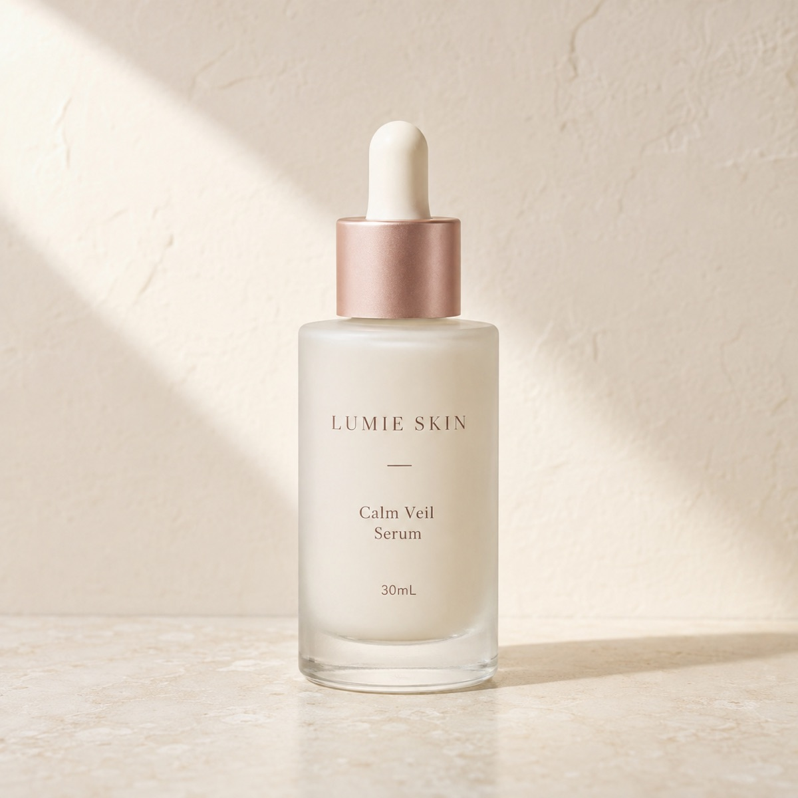
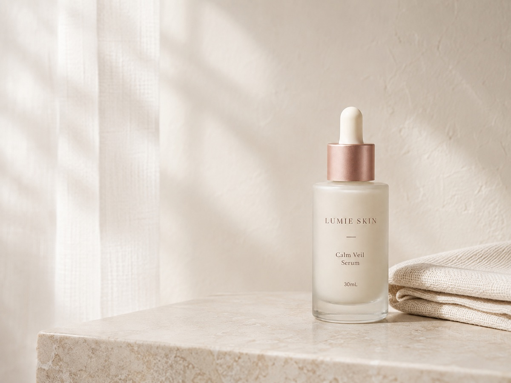
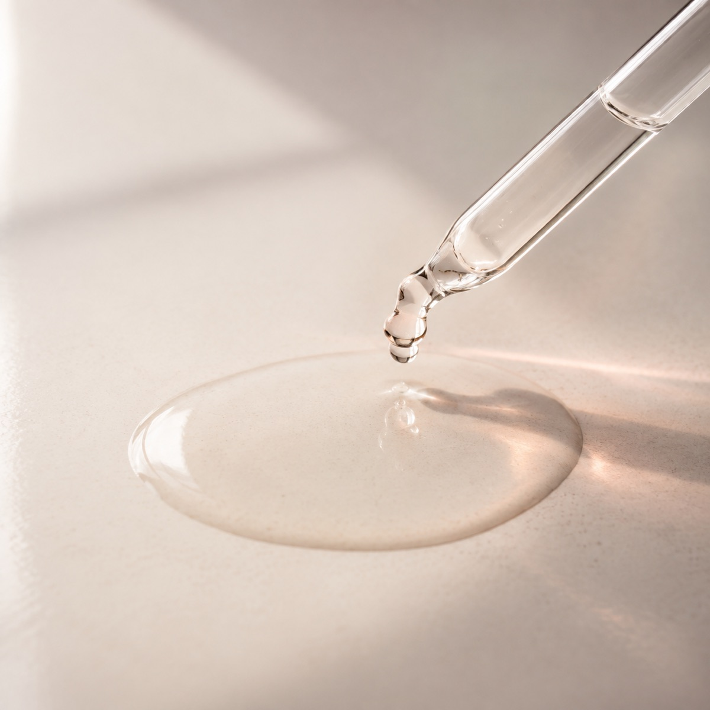

Lumie Skin
Calm Veil Serum
乾燥しがちな肌にすっとなじみ、うるおいを与えてすこやかに保つ。毎日のための保湿美容液。
※ 自主制作の架空商品です。実際に購入することはできません。

Your daily skin
季節や環境で変わりやすい肌に、必要なのは足し算ではなく続けやすさ。Calm Veil Serum は、毎日の保湿をひとつ整えるための美容液です。
01
気温や湿度が動く時期は、いつものケアだけでは物足りなく感じることがあります。
02
とろみが強いテクスチャーは、日中のメイクや朝の支度と相性が良くないことも。
03
工程が増えるほど続けにくくなる。だから、一本で役割がわかるものを選びたい。

Concept
「肌を変える」のではなく、毎日心地よく向き合える状態をつくる。わたしたちが考える保湿は、劇的な変化ではなく、続けられる静かな習慣です。
乾燥しがちな肌に必要なうるおいを与え、すこやかに保つ。そのために必要な設計だけを残しました。
Three points
MOISTURE
セラミドNPとグリセリンが、乾燥しがちな肌にうるおいを届けます。
BALANCE
パンテノールを配合し、日々ゆらぎやすい肌を整えて乾燥を防ぎます。
TEXTURE
とろみを抑えた設計で、朝の支度の前でもすっとなじみます。
Ingredients
なにが入っているかを確認してから選びたい方へ。主要成分と配合目的を記載しています。
うるおいを抱え込み、乾燥しがちな肌をやわらかく保ちます。
水分を保ち、季節を通してうるおいのある状態を支えます。
肌表面をなめらかに整え、うるおいを逃しにくくします。
ゆらぎやすい肌を整え、すこやかな状態に保ちます。

とろみを抑えた、みずみずしいテクスチャー。
How to use
洗顔・化粧水で肌を整えたあと、次のステップとして使用します。
手のひらに2〜3滴とり、体温でやさしく温めます。
顔全体を包み込むように、こすらずやさしくなじませます。乾燥が気になる部分は重ねづけを。
Product
カームヴェール セラム／保湿美容液
通常価格 4,400円（税込）
送料無料／定期購入ではありません
※ 自主制作のデモサイトのため、購入手続きには進みません。
FAQ
Calm Veil Serum 30mL・初回限定 2,980円（税込）／送料無料・定期購入ではありません。
※ 自主制作の架空商品・デモサイトです。
初回限定・送料無料
2,980円（税込）
Demo
こちらは自主制作のデモサイトです。実際の商品購入はできません。